བོད་སྨན་ལས་གཏོད་པ་བསོད་ནམས་ཆོས་འཕེལ།
四朗青佩
南派藏医传承人
藏医世家 · 三百余年传承
国家级非物质文化遗产 · 甘孜州南派藏医药代表性传承人
↓ 下滑探索

四朗青佩，藏族，1976年出生于四川甘孜炉霍的藏医世家。家族传承可追溯至清朝乾隆时期——先祖阿托为乾隆御前藏族御医，治愈乾隆顽疾获赐"代"姓与黄马褂；母亲系南派藏医发祥地德格土司后人。家中珍藏满、蒙、藏三种语言的医学典籍秘方，代代相传。
六岁启蒙学医，自幼诵读《四部医典》等传世经典；十六岁正式出诊，先后师从西藏藏医学院首任院长、一代宗师措如·才朗教授，以及藏医全科专家卡洛教授（全国名中医、青海藏医院原院长）、忠登郎加等藏医药名家，系统研习藏医全科与内科，并赴重庆医科大学研学"藏、中、西"三医结合。
1999年，年仅24岁的他应国家统战部与民宗委支持、经扎日活佛指点，来到北国冰城哈尔滨，创办内地第一家民营藏医院——哈尔滨德格藏医医院，成为将藏医药成规模、成体系推广到内地并取得成功的先行者；2020年又于成都创建成都喜马拉雅藏医医院，形成南北两大中心。
因号脉精准、医术精湛，他被患者与业内亲切称为"人体CT机"、被患者称作"药师佛"。2025年，他获评国家级非物质文化遗产——藏医药（甘孜州南派藏医药）代表性传承人。
一条跨越三百年的传承线：从乾隆御前藏族御医，到藏医世家的当代传人；从雪域高原，到北国冰城与天府之国。
出生于四川甘孜炉霍藏医世家。家族传承可溯至清乾隆御前藏族御医阿托（获赐"代"姓、黄马褂），舅爷曾任班禅与达赖的保健医生，母亲系德格土司后人。
在父亲要求下研习家族藏医传承，自幼诵读《四部医典》等传世经典，筑牢藏医药根基。
先后赴德格、拉萨、青海，师从措如·才朗、拉门却吉降措、卡洛等藏医大师深研藏医药，一路学习一路实践。
在西藏藏医学院系统研习藏医全科与内科；在四川省人民医院、北京同仁医院临床工作近十年。
年仅24岁，在哈尔滨创办哈尔滨德格藏医医院，成为将藏医药成规模推广到内地的先行者。
2003年非典被抽调至小汤山医院执行救治任务；2008年汶川地震率队送去首批救援药品；2010年玉树地震再送救援物资。
2006年医院正式获批，成为东三省首家、唯一国家二级藏医综合医院；2020年晋级国家二级医院，建筑面积1.2万平方米、开放床位500张。
作为东北地区藏医学代表、心脑血管医学专家应邀出席，与来自全球80多个国家和地区的顶级专家共研藏医药发展。
向四川省中医药管理局提交"清肺解瘟"藏药组方并率先应用（甘孜州78例确诊患者中76例使用藏药，参与率97%）；从国外筹募口罩空运回国，累计捐赠约200万元防疫物资。
在天府之国成都创建成都喜马拉雅藏医医院，形成东北、西南两大中心，构建覆盖全国的藏医药服务网络。
获评国家级非物质文化遗产"藏医药（甘孜州南派藏医药）"州级代表性传承人，投身非遗保护与活态传承。
四朗青佩院长家族父系、母系均为藏族地区（嘉绒、康巴）头人，历代思想开明、家风纯良。红军长征过甘孜时期，家族侍奉的扎日活佛率觉日寺僧众倾力支援红军，与刘伯承结下深厚情谊。

1936年红军长征自道孚入炉霍，觉日寺第四世扎日活佛深明大义，拥护欢迎红军，与刘伯承等红军将领建立深厚感情。刘伯承评价："觉日寺及其所辖两个寺院为红军长征的胜利作出了重要贡献。"
藏医学是拥有两千三百余年历史的世界四大传统医学之一。以"三因学说"为理论基石，配以天然雪域药材与独特炮制工艺，形成完整诊疗体系。
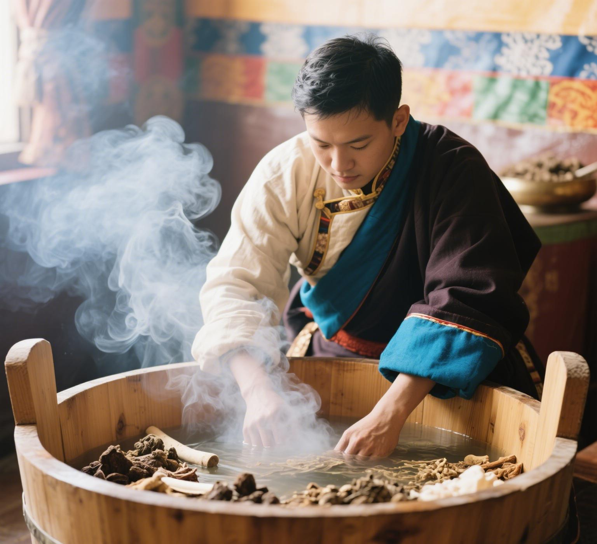
藏语称"泷沐"，以圆柏叶、黄花杜鹃、水柏枝、高山麻黄、白野蒿等"五味甘露"熬制药液沐浴，通过毛孔渗透调理气血。2018年"藏医药浴法"列入联合国教科文组织人类非物质文化遗产代表作名录，是传统医药中唯二的世界级非遗。
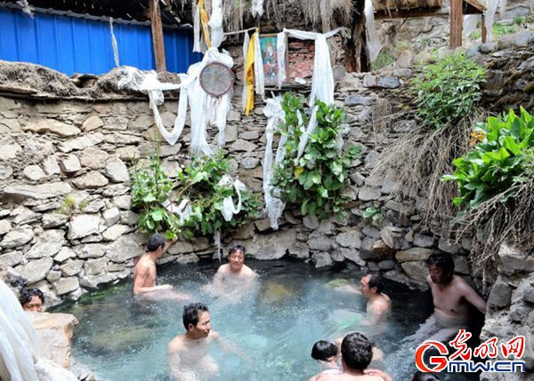
藏医药浴的传承与苯教仪轨密切相关，藏地天然温泉至今仍保留着悬挂经幡、依时令沐浴的古老习俗——药浴不仅是疗法，更是藏族传统文化的活态表达。
藏医认为健康源于"隆、赤巴、培根"三因的动态平衡，并据此辨证施治。舌诊、脉诊、尿诊是传承数千年的经典诊法，院长因号脉精准被誉为"人体CT机"。
藏药多采自海拔4000米以上雪域高原，纯净高活性。家族珍藏满、蒙、藏三文医典秘方，独有藏药配方400余个；参与国家级课题《伏藏大经典·藏医药部分》整理校对，让失传半个多世纪的名贵藏药"佐塔"重新面世。
白脉涂擦、霍尔麦热熨、金针、火灸、放血等特色外治疗法传承千年；藏香、防瘟药囊等传统防疫智慧在历次疫情中屡建功勋。
在世界医学杂志发表，将藏医诊疗智慧推向国际学术视野，引起世界医学界广泛关注。
选取60例心隆病患者分组对照研究，发表后荣获"年度百佳优秀学术论文"金奖，验证藏医药独特优势。
记录以哈尔滨德格藏医医院为代表的藏医药内地落地实践，探索"传承+创新"发展路径。
2024年9月7日，纪念著名藏学家、佛学家、藏医药学家措如·才郎大师学术思想研讨会在拉萨隆重召开。成都喜马拉雅藏医医院总院四朗青佩、执行院长文博久道受邀参加，共同追忆这位被誉为"智者大师 民族医圣"的一代宗师为中国藏医药学高等教育事业作出的贡献。
参与国家级重点科研课题整理校对，带领团队攻克工艺难关，让失传半个多世纪的名贵藏药"佐塔"重新面世。

四朗青佩 著 · 四川民族出版社 · 2025年12月出版
本书摒弃艰深的理论堆砌，直接切入藏医核心"三因"（隆、赤巴、培根）学说，以现代语言清晰阐释人体如何与自然共振、三因如何维系健康天平。
书中精心融入多幅珍贵的藏医曼唐（医学唐卡）细节插图——不仅是艺术品，更是蕴含诊断、治疗智慧的图谱，让读者在欣赏藏族独特美学的同时，直观理解身体与自然的连接。
从怎么吃、怎么动，到如何调节情绪、安排起居，将藏医理论转化为具体、可执行的日常养生建议，填补藏医养生通俗读物空白。
青佩院长携新作举办新书发布暨签名赠书仪式，为读者亲笔签名、赠书交流，藏医药养生智慧走进千家万户。
整理一代藏医名家忠登郎加的诊疗经验，让经典临证智慧有据可查、薪火相传。
"不为良相，便为良医。"二十余年来，青佩院长把工资与心血倾注于公益慈善，被媒体评价为"民族脊梁"式的医者。

2003年非典、2008年汶川、2010年玉树、2013年芦山、2020年新冠，历次灾情均率队驰援（据官方资料整理）。

每年资助10名大学生，每人每月2000元，从大一资助至毕业。

从泰国、法国等筹募10万只口罩空运回国，为武汉、成都、阿坝、炉霍、哈尔滨一线医务筑起防疫墙；向主管部门推荐藏药组方，甘孜州78名确诊患者中76人运用藏药参与救治。

长年为残疾人士及特困家庭减免医药费，秉持"医佛同源"的慈悲理念，用仁心仁术温暖弱势群体；每年深入藏区义诊约100场，免费治病并送上捐助。


在石渠县瓦须乡卫生院前，藏族群众为青佩院长献上哈达、授予「民族健康大使」荣誉牌匾——"千里赴雪域，温暖万家心"，是藏区老百姓对他多年来免费义诊、免费赠药、帮扶穷苦乡亲最朴素也最真挚的肯定。
四川省文化厅原副厅长泽波、藏区高僧希阿荣博堪布，多次与青佩院长深入研讨藏区医疗卫生发展，共同推动哈尔滨德格藏医医院、成都喜马拉雅藏医医院反哺雪域、帮扶藏区基层医疗卫生事业——共商藏区特困老百姓看病难、看病不方便问题，两家内地藏院携手支援帮扶藏区医院。


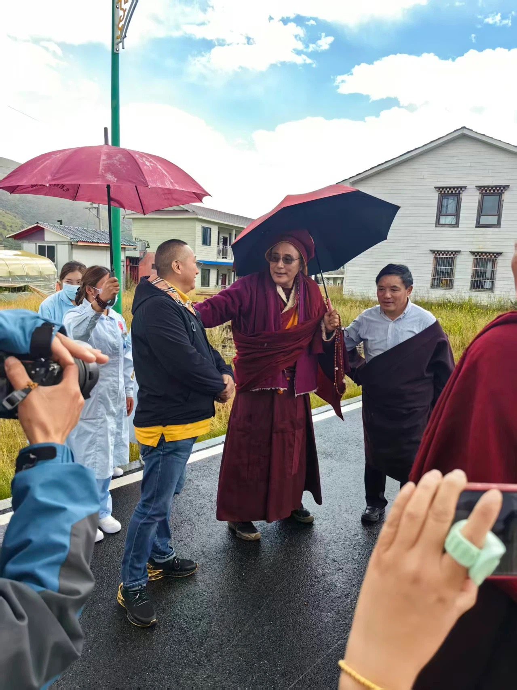
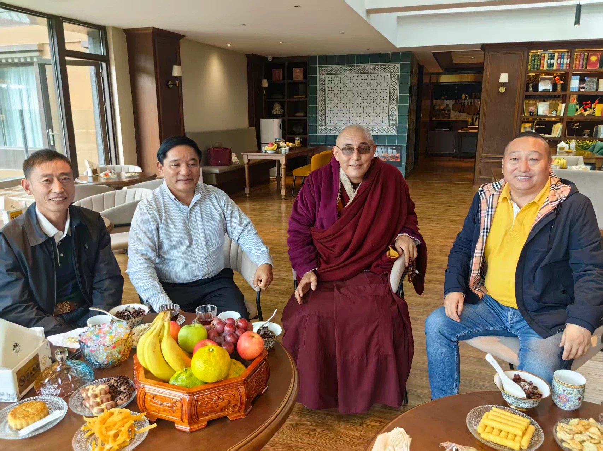
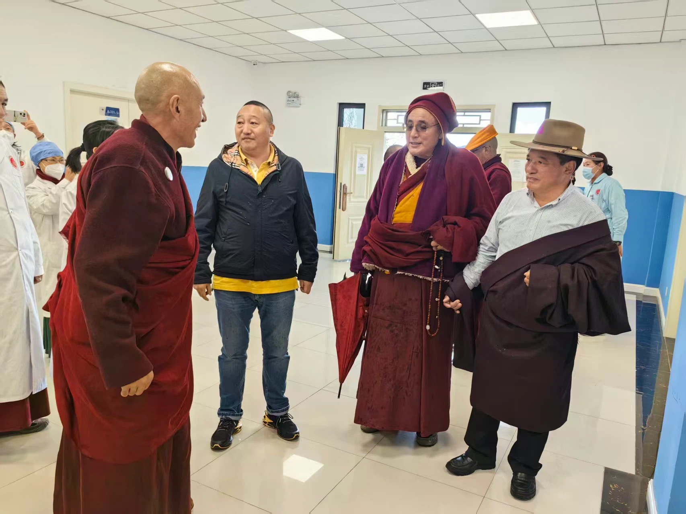
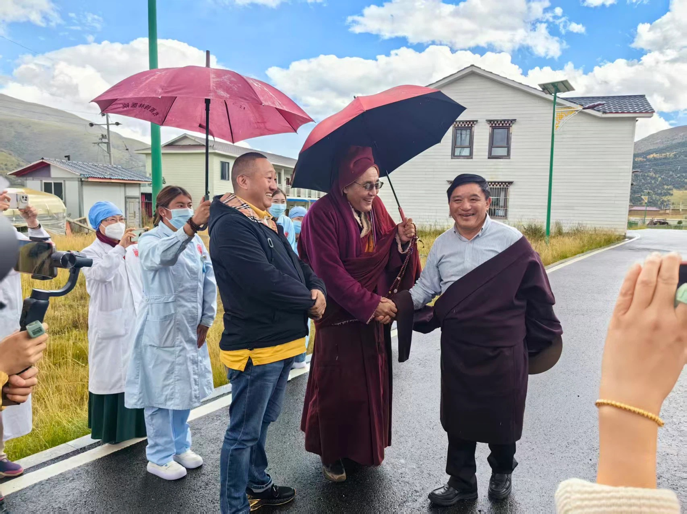
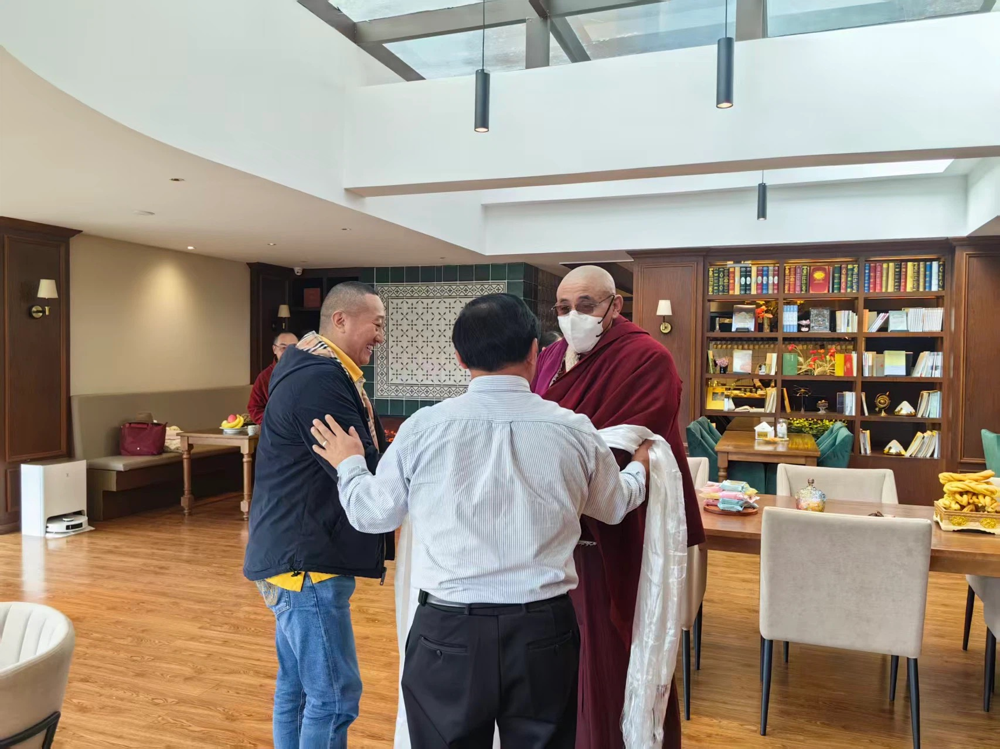
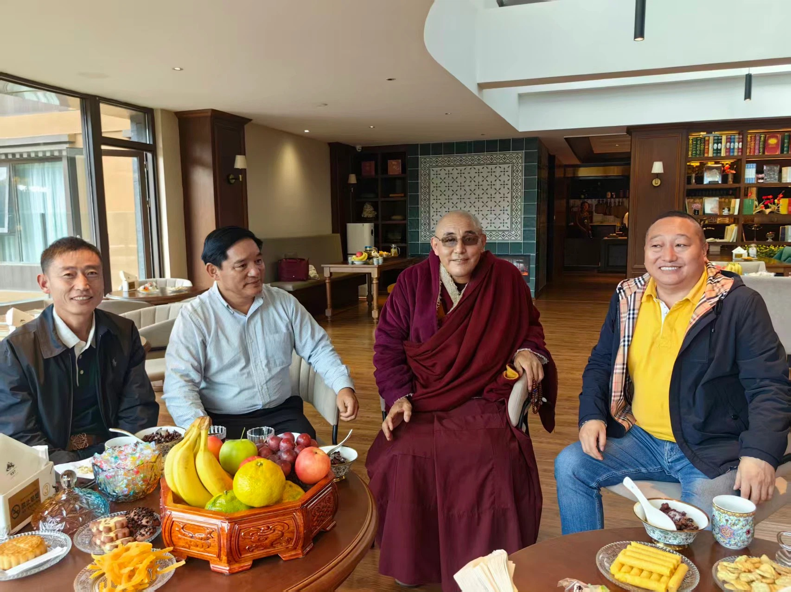
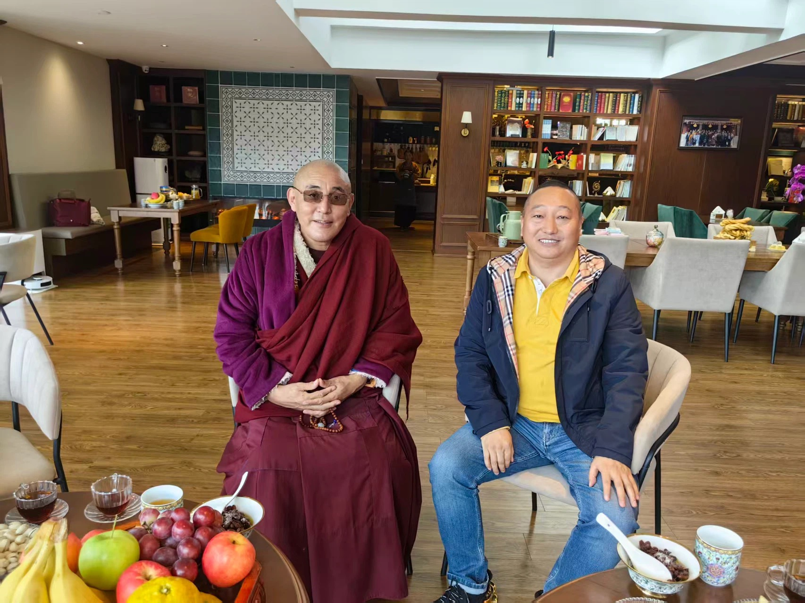
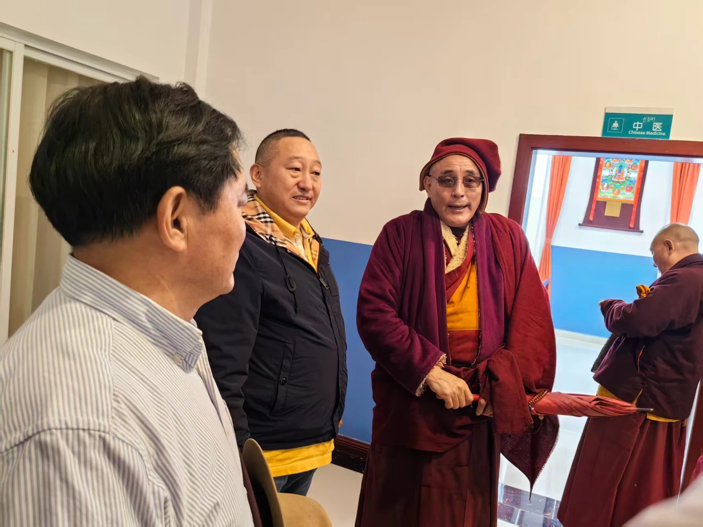
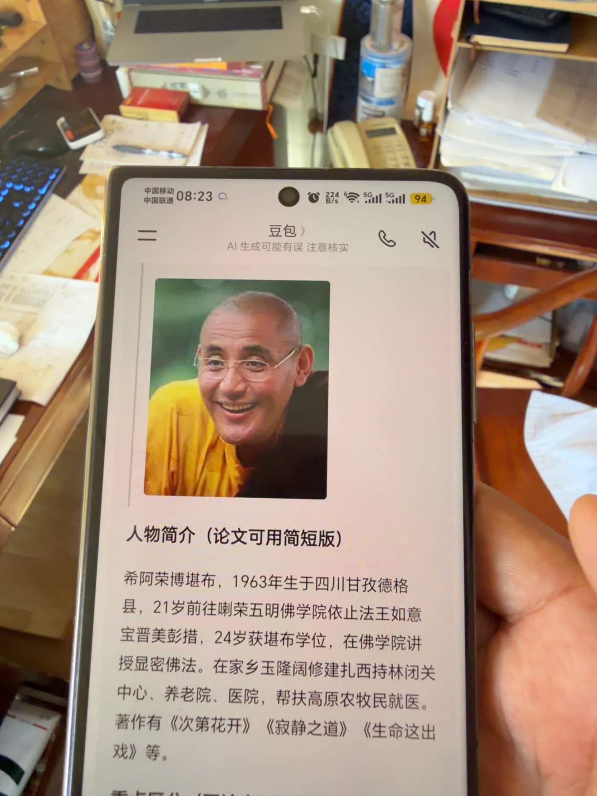
作为少数民族医药先进个人代表，出席在北京举行的第四次全国少数民族医药会议。
长期以委员身份履职建言，获评农工党优秀党员光荣称号。
新冠疫情中率队筹募十万只口罩空运回国，捐赠物资总价值近百万元。
出身藏医世家，六岁学医、十六岁行医，被认定为国家级非遗甘孜州南派藏医药传承人。
多年担任黑龙江省政协委员，为民族医药发展与民生健康积极建言；活跃于国际传统医学学术舞台，推动藏医药走向世界。


黑龙江藏医捐赠价值近百万元防控疫情物资——"他，仿佛是为扶危济困而生。"
2020-02-27 · 中国日报网四朗青佩：以本民族医药救治病患，是我最幸福的事——从祖传医书到抗疫组方，一位藏医的赤子之心。
2020-03-18 · 中国西藏网藏医专家四朗青佩在"向巴聊天"中解析民族医药经典——主持人向巴老师实地采访，畅聊世界非遗藏药浴、亚健康问题与藏医药在内地的传承弘扬。
2023-06 · 康巴卫视跨越喜马拉雅的战"疫"——藏医药抗疫与铸牢中华民族共同体意识：甘孜州78名确诊病例中76名使用藏药，参与率达97%。
2022-01-18 · 新华网四朗青佩[哈尔滨德格藏医医院创始人、院长]——人物履历、医学贡献、公益捐赠完整收录：每年藏区义诊100场、公益善款500余万元。
抖音百科 · 四朗青佩缅怀先师 · 四朗青佩院长受邀参加"措如·才郎学术思想研讨会"——2024年9月7日于拉萨隆重召开，追忆"智者大师 民族医圣"为中国藏医药学高等教育事业作出的贡献。
2024-09 · 成都喜马拉雅藏医医院成都喜马拉雅藏医医院 · 中医医疗广告审查证明公开文件，法定代表人（主要负责人）：四朗青佩。
2023-09 / 2025-10 · 四川省中医药管理局他衣着简朴、生活节俭，一套藏袍可出席多届国内外学术会；却为疫区持续捐赠防控物资近百万元——他就是四朗青佩。悬壶济世 · 同胞之情血浓于水。
央广网 / 中国工业新闻网四月，青佩院长回哈出诊——患者听说院长回哈尔滨出诊，每天早早来到医院门口排队；院长日诊数十人为各族患者解除病痛。
2023-04-17 · 搜狐大德高僧索达吉堪布多次亲临哈尔滨德格藏医医院，关心藏医医院的发展建设，与青佩院长共议藏医药的传承弘扬与未来发展。


作为黑龙江省政协委员，四朗青佩院长多年来认真履职、积极建言——为民族医药事业发展与百姓健康福祉建言献策。


青佩院长出身藏医世家，幼年随父研习家族传承，2017年12月28日拜师藏医专家卡洛教授，正式成为"卡洛藏医学术经验继承人"。
以传统师承模式带徒授艺——从辨识雪域药材、诵读经典，到临证号脉、炮制藏药，全程口传心授、亲手示范，为藏医药事业培养后继人才。
从北国冰城到天府之国，两座藏医医院构建起覆盖南北的藏医药服务网络，让千年藏医智慧惠及更多百姓。